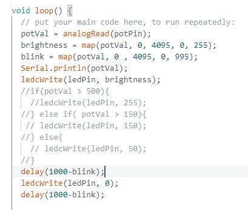

<div class="textcontainer">
<p class="margin"> </p>
<h3>Week 4: Microcontroller Programming</h3>
<h4>[Sketch of Circuit]</h4>
<img style = "width: 35%" src="circuit drawing.png">
<h5>[Snippet of code]</h5>

<h6>[Summary]</h6>
<h7>The main challenge of this assignment was connecting the microcontroller to my computer. It turns out I had some packages that I haven't downloaded, which meant my computer didn't recognize the board. Additionally, I tried to wire the non-numbered dev module using the numbered dev module as a guide, which was not a good idea because the numbers are actually offset by 1. Eventually, I was able to build a circuit with an led and a potentiometer. As you turn up the poteniometer, the led lights up brighter and also blinks faster. When you turn it down, the opposite is true. This project really taught me how to use the map function and how useful it is.</h7>
<h8>[Circuit Demo Down Below]</8>
<img style = "width: 35%" src="circuit demo 1.gif">
<img style = "width: 35%" src="circuit demo 2.gif">
</div>